作者：创世魂
● 概述
本组件除了具备显示图片的能力之外，还是一个容器，继承了“组件布局器”的所有方法。
●图片(写)
帮助文档如下图：
1、通过本属性可以设置当前组件要显示的图片。
2、属性值为“位图资源”属于程序内置资源，不能动态载入本地图片数据，任何东西都无法转换为“位图资源”。
3、如果想要清空图片将本属性值设置为“空资源.空位图”即可。
注意：本属性等同于“组件布局器”中的“底图”属性。
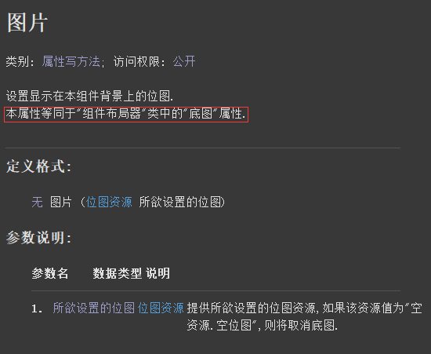
界面设计如下图：
配置模块后，在“基本容器组件”中就可以找到图片框组件，在右侧属性栏就可以导入要显示的图片。
当软件被编译后，导入的图片会自动编译到exe程序内部。
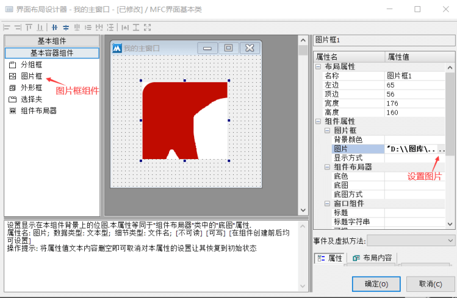
代码编写如下图：
也可以通过组件的属性栏增加图片属性来进行导入图片。
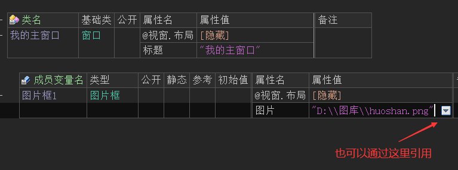
运行效果如下图：
最终导入的图片会显示在图片框上。
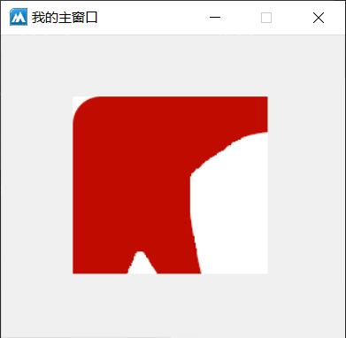
● 显示方式(写)
帮助文档如下图：
通过本书属性可以设置图片的显示方式，默认显示为左上角放置。
注意：本属性等同于“组件布局器”中的“底图方式”属性。
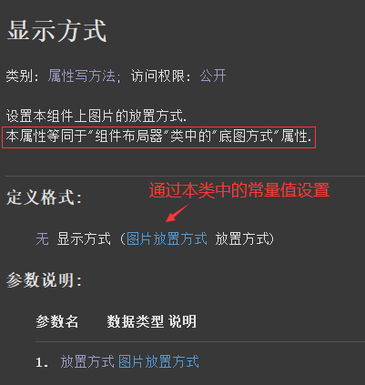
界面设计如下图：
可以选择在界面设计器中设置显示方式，比如设置成“缩放图片”，就可以将图片缩放铺满图片框。
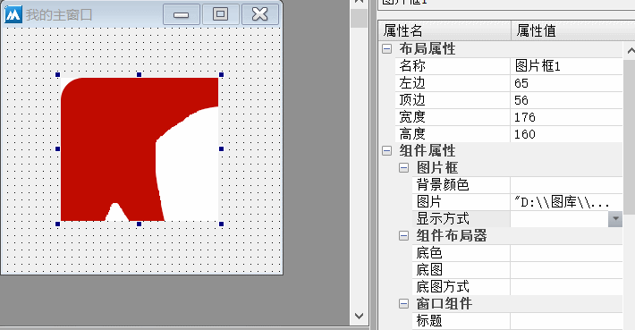
代码编写如下图：
也可以选择按钮点击后动态设置，调用方式为“图片放置方式.XXX”.
比如这里提供“图片放置方式.缩放图片”。
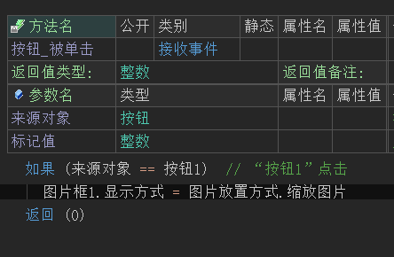
运行效果如下图：
最终可以看到图片被成功缩放。
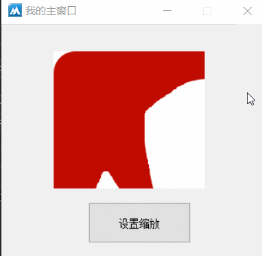
● 背景颜色(写)
帮助文档如下图：
通过本属性可以设置图片框的背景色。
注意：本属性等同于“组件布局器”中的“底色”属性。
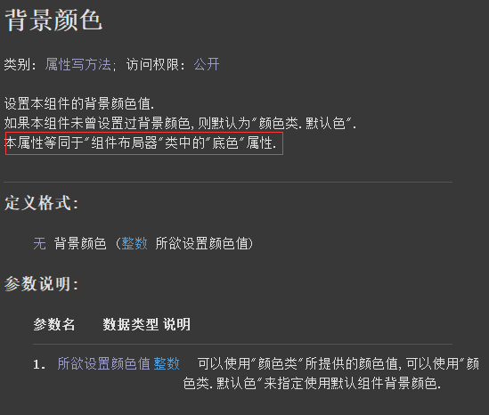
代码编写如下图：
按钮点击后设置本组件的背景颜色属性即可，可以使用“颜色类”中的常量值也可以使用十六进制颜色值。
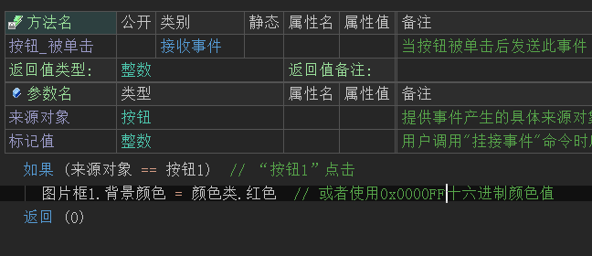
运行效果如下图：
最终可以看到图片框底色被改变。
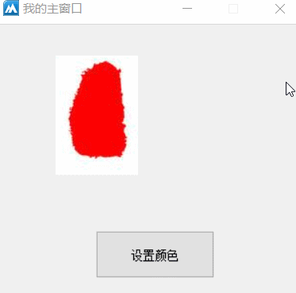
● 置底图数据
帮助文档如下图：
调用本方法可以给图片框设置字节集图片数据。
注意：本方法来自于“组件布局器”，因为图片框继承了本类，因此也可以使用本类中的方法。
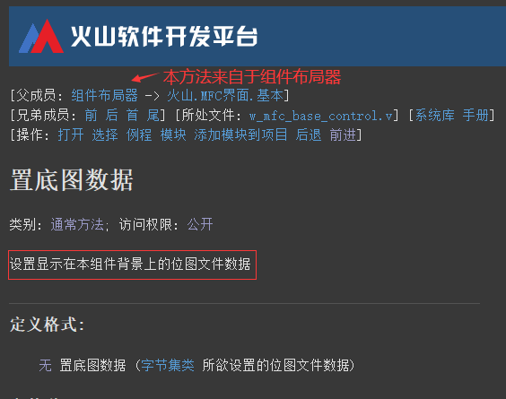
代码编写如下图：
按钮点击后调用本方法，利用“读入文件()”方法读取本地图片的字节集数据。
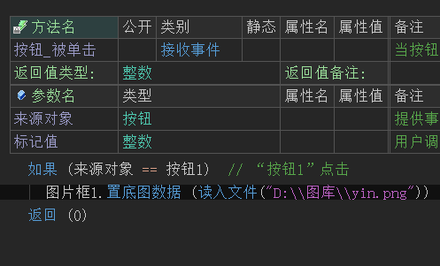
运行效果如下图：
最终可以看到图片框图片发生改变。
● 容器特性演示
界面演示：
在图片框组件上方一个按钮，拖动图片框的时候按钮也会跟随拖动，这也就是图片框容器的特性。
即使是通过代码调整图片框移动，图片框内的按钮也会跟随移动。
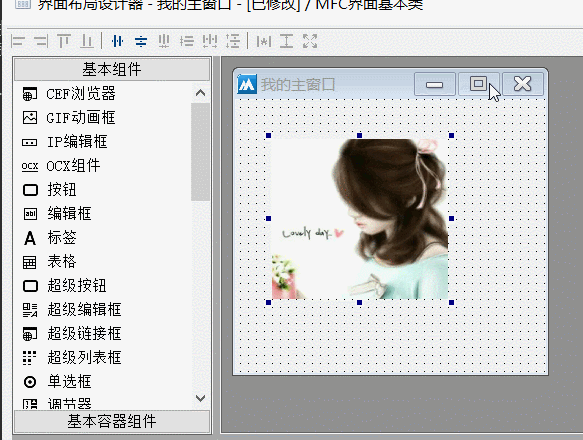
代码编写如下图：
按钮点击后设置图片框左边为0.
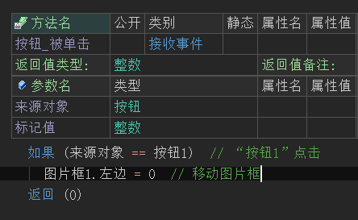
界面演示：
最终可看到按钮依然会跟随图片框移动。
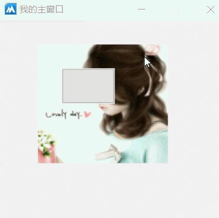